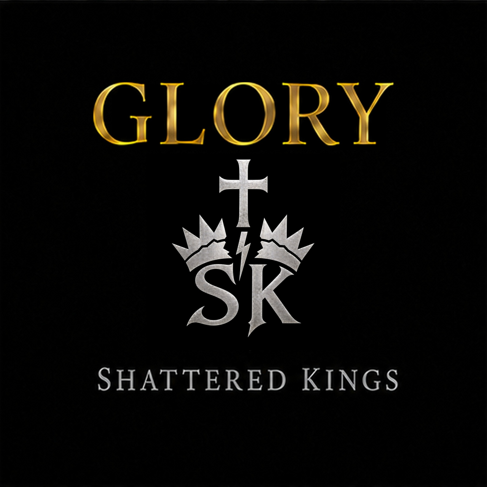
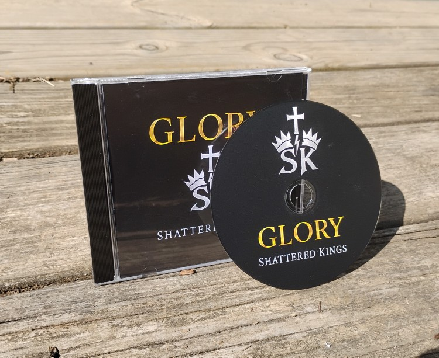

A Christian music project rooted in Scripture
GLORY
“The Lord is at your right hand; he will shatter kings on the day of his wrath.”Psalm 110:5

The album
Revelation. Rebellion.
Repentance. Restoration. Worship.
Five songs drawn from the Psalms, followed by a spoken reflection and prayer—truth about God, man, judgment, mercy, and hope in Jesus Christ.
- 01TruthPsalm 19
- 02WrathPsalm 2
- 03MercyPsalm 51
- 04LovePsalm 103
- 05SovereignPsalm 145
- 06Closing WordsSpoken reflection & prayer
Why Shattered Kings
Christ is King. Every ruler, every nation, and every authority stands under Him and will answer to Him.
Shattered Kings takes its name from Psalm 110:5. The songs are written to point beyond themselves—to who God is, who we are before Him, and the hope found in Jesus Christ.
Physical edition
Hold the music.
Share the message.
A six-track jewel-case CD, manufactured on demand and shipped directly by Kunaki.
$11 plus shipping
Order Glory on CDPayment is processed through PayPal. Kunaki manufactures and ships the CD directly to you.
Listen
Hear GLORY on YouTube.
The full album and future releases from Shattered Kings.
Visit YouTubeOccasional updates
New music. Nothing extra.
Join the Shattered Kings mailing list for new releases and occasional project updates.
Join the mailing list